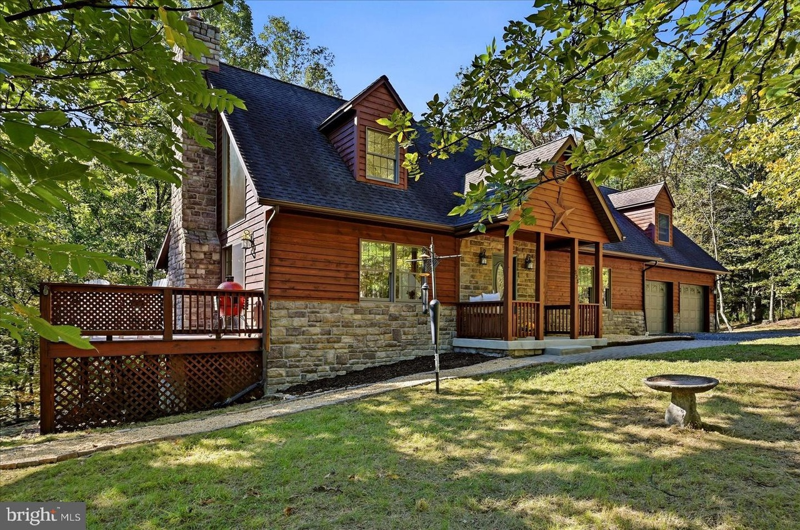
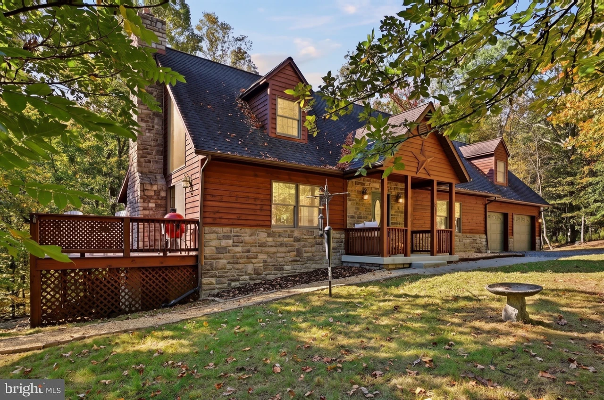
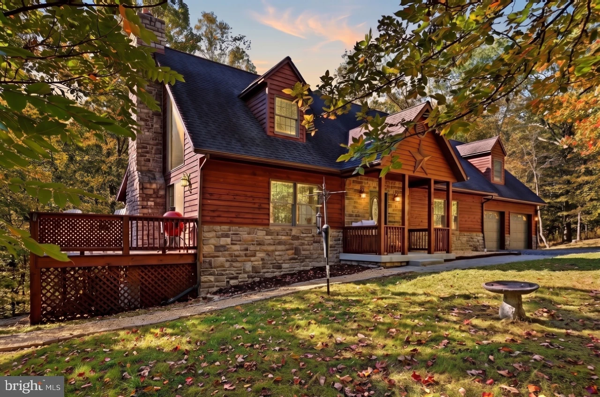
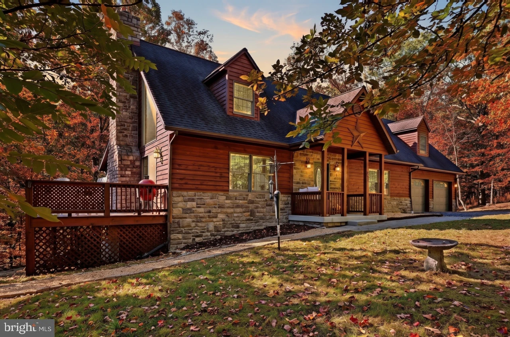
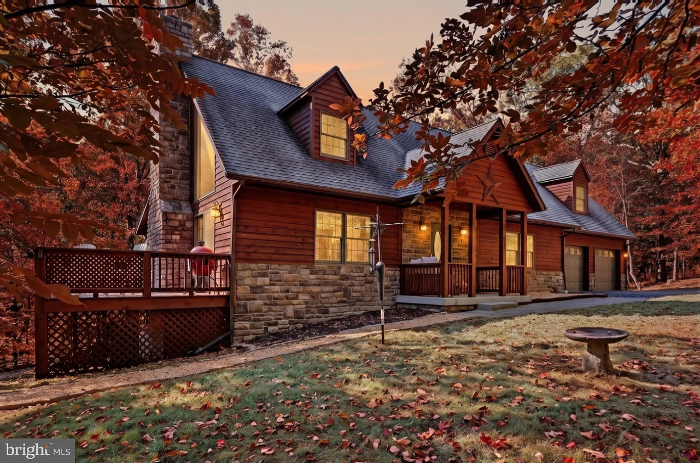
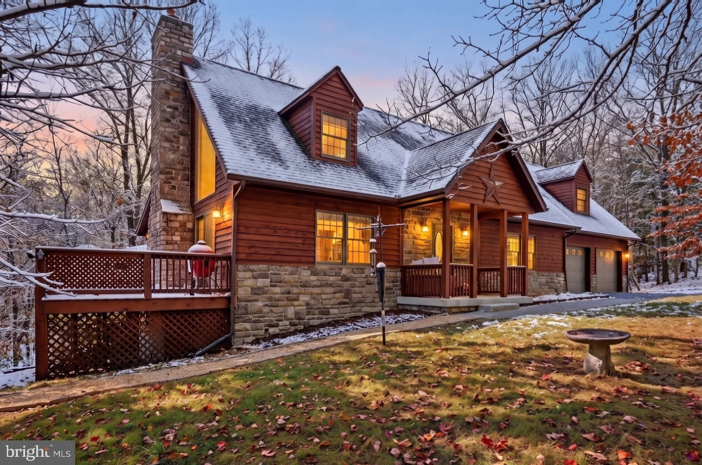
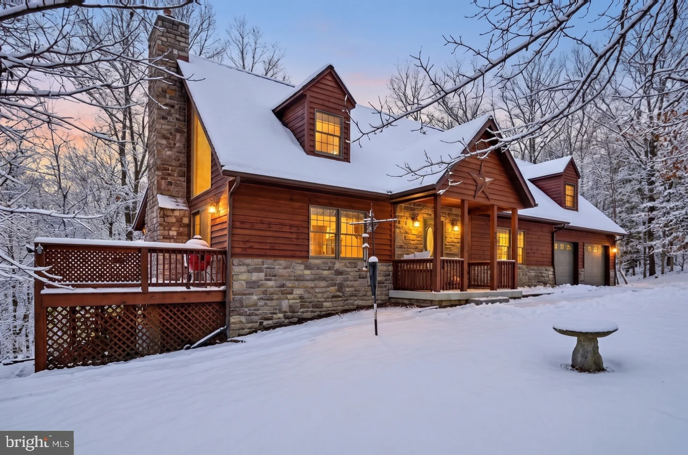
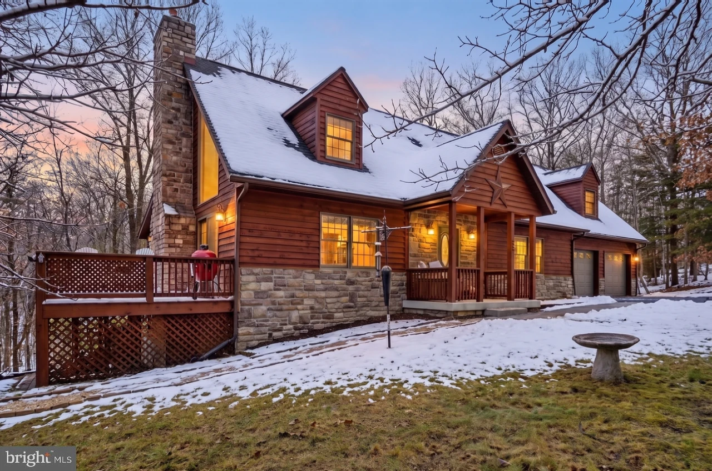
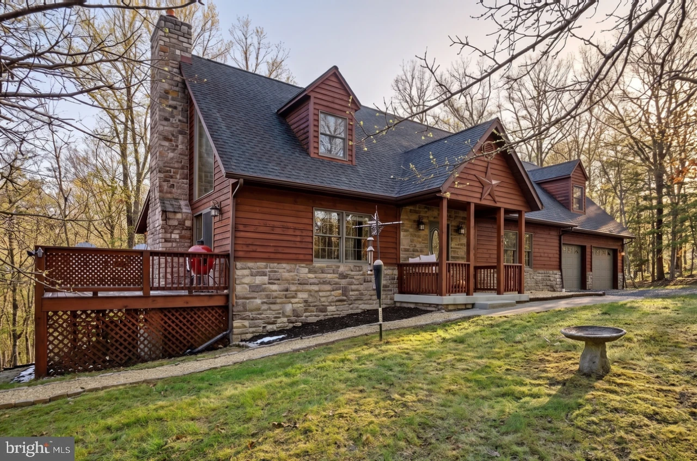
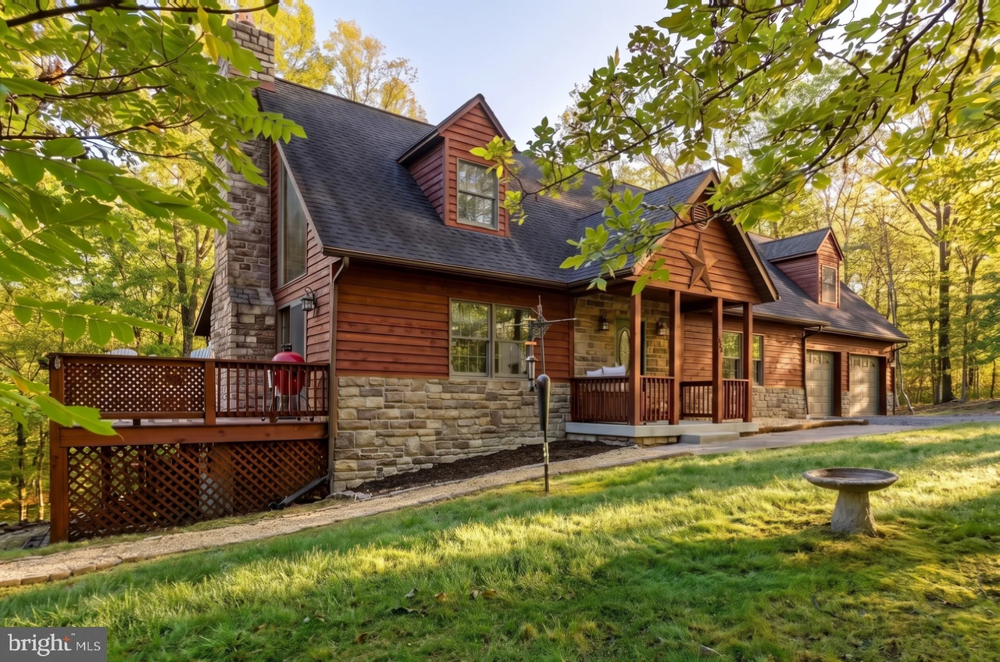
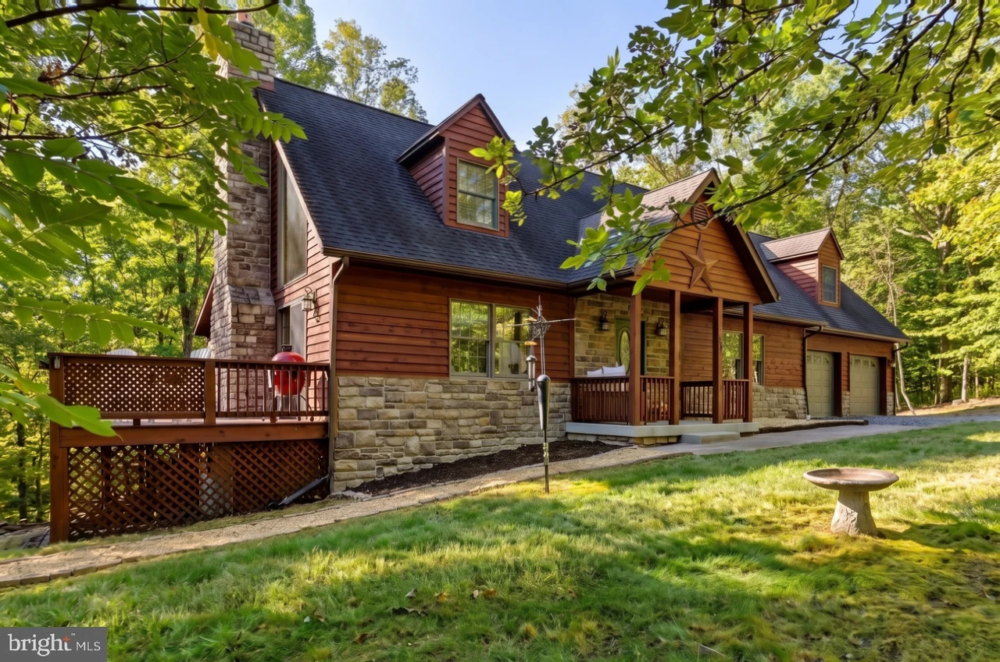
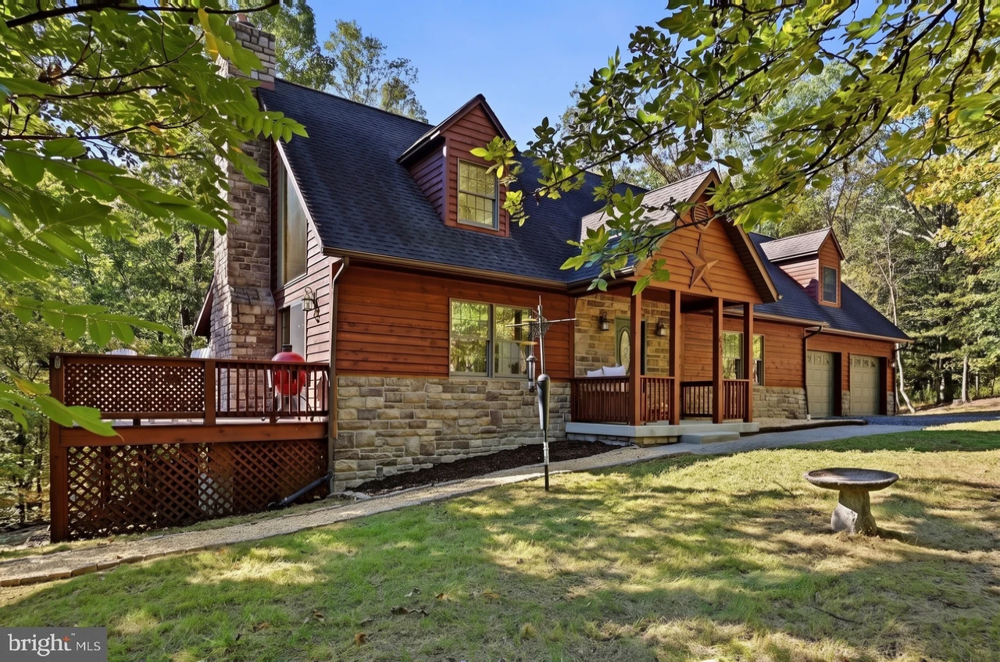
Original late-summer photograph. Loading seasonal study…
12 scenes · 5s full year · continuous dissolves. Late summer is the unchanged original; the other 11 scenes are AI-edited concepts. Four approved targets plus eight new seasonal stages. Live site unchanged.
Compare four seasonal targets
Four approved targets remain unchanged. Camera alignment corrected to the high-quality original; fine AI-generated details can still differ.
Compare all twelve scenes in playback order
Eight new scenes bridge the approved targets. Lighting, foliage and snow evolve together; generated fine detail can still shift during dissolves.